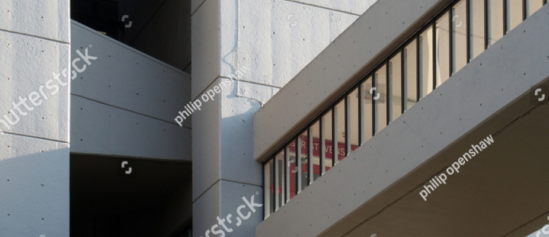
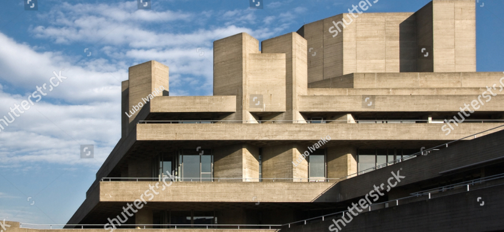

Paseo De Las Palmas

History
This building has a nine-story tower for offices and a two-story plinth for commercial premises. Each floor is horizontally displaced in order to generate its unmistakable staggered profile. Despite its apparent instability, the rigid-frame structure transmits loads vertically throughout the whole height of the building. Each level is formed by a solid parapet clad in dark aluminum above which there runs a perimeter ribbon window. The plinth is clad with a polished red granite surface. Labeling it an example of a “counter-trend” in the context of Mexican modernity and of Sordo Madaleno’s own career, Alberto González Pozo points out that the building “demonstrates that abandoning orthogonal order is not a prerequisite for achieving provocative forms.” Due to its avant-garde shape, this building is nowadays one of the architect’s most famous buildings
Current State
Despite its apparent instability, the rigid-frame structure transmits loads vertically throughout the whole height of the building. Each level is formed by a solid parapet clad in dark aluminum above which there runs a perimeter ribbon window. The plinth is clad with a polished red granite surface. Labeling it an example of a “counter-trend”.
It was the first buiding I have ever seen in my life
Jeniffer Lopez have said
Current State
Despite its apparent instability, the rigid-frame structure transmits loads vertically throughout the whole height of the building. Each level is formed by a solid parapet clad in dark aluminum above which there runs a perimeter ribbon window. The plinth is clad with a polished red granite surface. Labeling it an example of a “counter-trend”:
- rigid-frame structure
- ribbon window.
- a perimeter
Current State
Despite its apparent instability, the rigid-frame structure transmits loads vertically throughout the whole height of the building. Each level is formed by a solid parapet clad in dark aluminum above which there runs a perimeter ribbon window. The plinth is clad with a polished red granite surface. Labeling it an example of a “counter-trend”:
Current State
Despite its apparent instability, the rigid-frame structure transmits loads vertically throughout the whole height of the building. Each level is formed by a solid parapet clad in dark aluminum above which there runs a perimeter ribbon window. The plinth is clad with a polished red granite surface. Labeling it an example of a “counter-trend”:

Where can you see it
Mexico-city, Mexico
Mexican street 78
to the right from 7eleven